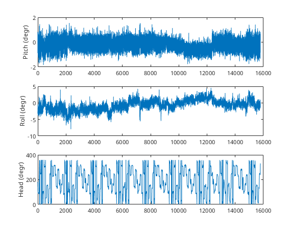
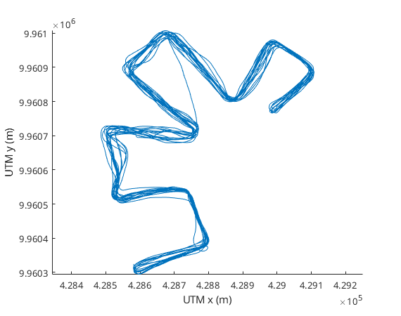
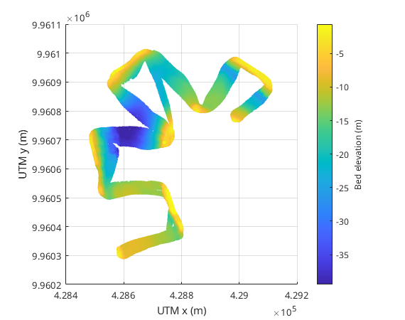
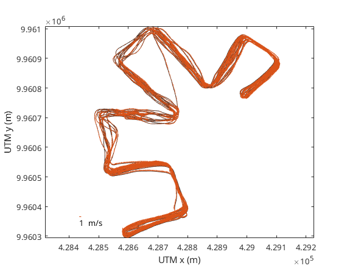
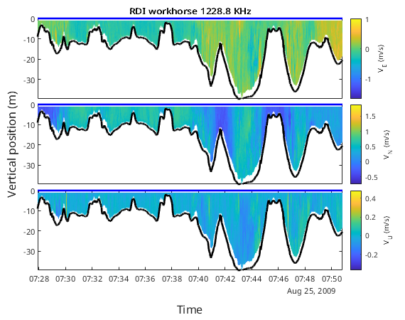
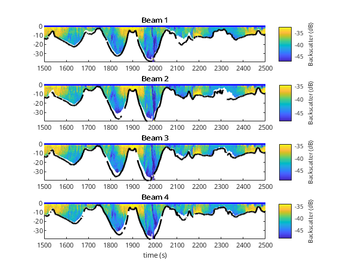

Initial inspection of ADCP data
The classes ADCP and VMADCP implement a number of methods that help the user to inspect the data. These functions are mostly plot functions
Contents
Reading data
For instructions on how to read ADCP data see: Reading the data
Instrument orientation
Inspect the tilts of the instrument during deployment:
mmbend.plot_orientations
The orientations are within reasonable limits for ship borne deployments
Ship track
We can plot the ship track as follows:
figure mmbend.plot_track
Detected bed elevation
The bed elevations as detected by each of the acoustic beams and corrected for tilts of the instrument can be displayed with:
figure mmbend.plot_bed_position
This plot displays the elevation of the bed.
Depth averaged velocity
The depth averaged velocity is plotted as:
figure mmbend.plot_track_velocity
Velocity data
The velocity data can be inspected as follows:
figure mmbend.plot_velocity set(gca,'xlim',[1500 2500]) % zooming in on portion of the data
Note that by default the velocity is shown in earth coordinate system, i.e. Vx is east velocity, Vy is north velocity and Vz is upward velocity. The changes to the vertical positioning settings are also reflected in the velocity plot.
Acoustic backscatter
We can inspect also the backscatter profiles
figure mmbend.plot_backscatter set(gca,'xlim',[1500 2500]) % zooming in on portion of the data